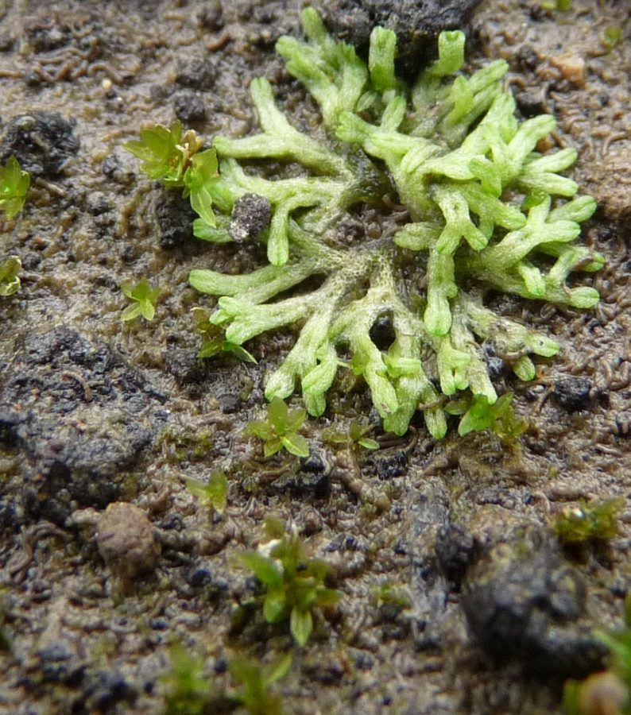

काई (ज़मीन की हरी गुलाबी काई)Crystalwort
Riccia · Ricciaceae · FLR-0118

- Scientific nameवैज्ञानिक नाम
- Riccia L.
- Familyकुल
- Ricciaceae
- Hindiहिंदी
- काई (ज़मीन की हरी गुलाबी काई)
- Local namesस्थानीय नाम
- kai, zameen ki kai, hari kai, riccia
- Status hereयहाँ की स्थिति
- native
- Movementआवागमन
- Resident, here all year
- IUCNIUCN
- not evaluated
- Reviewसमीक्षा
- audited and independently read
When to look कब देखें
Expected mainly in July, August, September, October, November, December, January, February.मुख्यतः जुलाई, अगस्त, सितंबर, अक्टूबर, नवंबर, दिसंबर, जनवरी, फ़रवरी में अपेक्षित।
Uses and possibilities उपयोग और संभावनाएँ
“Traditional medicine” means a documented traditional use, not a claim that it works. Nothing on this page is medical advice.
Drawn from the documented uses in the profile below, where each is labelled traditional, current or a research lead. All uses →
Tell it apart from इनसे अलग पहचानें
काई / Crystalwort
Riccia L. — Ricciaceae
ज़मीन की हरी गुलाबी काई — बरसात के बाद मेड़, परती खेत और दीवार के पास की नम मिट्टी पर उगने वाली छोटी-छोटी हरी गुलाबें, हर एक सिक्के भर की, बीच से बाहर की ओर काँटे की तरह बँटी हुई लोबों की। न जड़, न तना, न असली पत्ती — यह लिवरवर्ट है, धरती पर उगने वाले सबसे पुराने किस्म के पौधों में से एक। उत्तर भारत के मैदानों में इसकी कई जातियाँ हैं, और गाँव में सबका नाम बस "काई" है।
Quick Identification त्वरित पहचान
| Feature | Description |
|---|---|
| Form | Flat green rosettes 0.5–3 cm across, made of strap-like lobes that fork once or twice from the centre |
| Lobes | 1–5 mm wide, fleshy, often with a groove down the middle; edges sometimes purple or with white hairs |
| Underside | Pale, with fine root-hairs (rhizoids) and sometimes purple scales; no true roots |
| Texture | Spongy-fleshy, matt; dries to a curled greyish scrap, revives when wetted |
| Reproduction | Spores in tiny dark swellings sunk in the lobes; no flowers, no seeds |
| Where | Bare damp soil, in the open or part shade, often in colonies covering a square metre |
Field tip: After the rains, bend down at a bund or a fallow field: green rosettes the size of coins, each like a little forked star pressed to the mud. The forking lobes and the absence of any leaf or stem say liverwort; the rosette shape on soil says Riccia.
हिंदी — कैसे पहचानें: बरसात के बाद मेड़ या परती खेत की नम मिट्टी पर सिक्के भर की हरी गुलाबें, जिनके फीते जैसे लोब बीच से दो-दो में बँटते हैं; न पत्ती, न तना, न फूल। सूखने पर मुड़ी हुई भूरी पपड़ी, भीगने पर फिर हरी।
Morphology आकारिकी
Biometrics (plains species of northern India):
| Measurement | Range |
|---|---|
| Rosette diameter | 0.5–3 cm |
| Lobe width | 1–5 mm |
| Thallus thickness | 0.3–1 mm |
| Spore diameter | 60–120 µm |
Thallus: The plant body is a flat, dichotomously branching ribbon, several cells thick, with air chambers or vertical photosynthetic filaments in the upper layer and a storage layer below; there is no vascular tissue, and water is taken up over the whole surface.
Rhizoids and scales: Single-celled hairs anchor the plant; ventral scales, often purple, protect the growing tip.
Sex organs and spores: Sunk into the thallus along the midline; after fertilisation by swimming sperm in a film of water, a capsule develops inside the tissue and the spores are freed only when the plant decays. The large spores, with sculptured walls, survive the dry season and are the means of return each monsoon.
Species of the region. Indian floras record a dozen or more Riccia species from the Gangetic plain, among them Riccia discolor, R. billardieri, R. gangetica and R. frostii; separating them needs spores and a microscope, which is why this profile stops at the genus.
हिंदी: पौधे का शरीर एक सपाट फीता है जो दो-दो में बँटता है; ऊपर की परत में हवा के कक्ष और नीचे भंडार; न नसें, न जड़ — पानी पूरी सतह से। बीज नहीं, बीजाणु, जो पौधे के सड़ने पर मुक्त होते हैं और गरमी भर मिट्टी में ज़िंदा रहते हैं। गंगा के मैदान में इसकी दर्जन भर जातियाँ हैं, जिन्हें सूक्ष्मदर्शी से ही पहचाना जा सकता है।
Behaviour & Ecology व्यवहार और पारिस्थितिकी
Liverworts were among the first plants to live on land, four hundred million years ago, and Riccia still lives the way they did: flat on wet soil, drawing water through its whole body, reproducing by sperm that must swim. Its season is therefore the wet one. Spores germinate as the monsoon soaks the ground; rosettes spread over fallow fields, bunds and ditch sides; with the cool season they persist on damp shaded soil, and with the heat they wither and the spores wait.
The rosettes hold moisture and bind the soil surface, shelter springtails and mites and tiny snails, and are grazed by them. Some species float on ponds as green rafts. None is known to be harmful or useful to people, and in that lies their interest: a whole kingdom of life on every bund that nobody has named.
हिंदी: लिवरवर्ट ज़मीन पर उगने वाले पहले पौधों में थे, चालीस करोड़ साल पहले, और रिकिया आज भी वैसे ही जीती है — नम मिट्टी पर सपाट, पूरे शरीर से पानी लेती, तैरते शुक्राणुओं से प्रजनन करती। इसीलिए इसका मौसम बरसात है। यह मिट्टी की सतह बाँधती है और छोटे कीड़ों और घोंघों को छिपाती है। न नुकसान, न फायदा — बस हर मेड़ पर एक पूरी दुनिया जिसका नाम किसी ने नहीं रखा।
Life Cycle / Phenology जीवन चक्र
| Month / season | Event |
|---|---|
| July–August | Spores germinate on soaked soil; young rosettes appear |
| September–November | Growth, branching, fertilisation in surface water films |
| December–February | Spore capsules mature inside the thallus; plants persist on damp shaded ground |
| March–June | Plants die and decay, releasing spores; spores dormant through the heat |
हिंदी: बरसात में बीजाणु उगते हैं, पतझड़ में बढ़ती और प्रजनन, सर्दी में बीजाणु पकते हैं, गरमी में पौधा सड़कर बीजाणु छोड़ देता है।
Associated Species / Interactions संबंधित प्रजातियाँ
- Fellow pioneers of wet soil: Star Jelly, mosses, and seedlings of Doob Grass.
- Grazers and residents: springtails, mites, small snails.
- The field it lives in: fallow after Paddy, before Wheat.
Pests and Diseases कीट और रोग
- Grazed by snails and springtails; parasitised by soil fungi. No concern.
Agricultural / Human Relevance कृषि प्रासंगिकता
Traditional and Ethnobotanical Use: none recorded for the region. Riccia has no documented use in Indian traditional medicine or craft; it appears in the literature only as a plant of botany classes, where it is the standard liverwort dissected by every first-year student in India.
Agriculture. Harmless; a sign of damp fallow ground. Thick mats can slightly delay seedling emergence in nurseries. Its presence indicates that the surface stayed moist, which is useful to know.
Today. Nothing, beyond the classroom.
Research direction (a lead, not a result). The liverworts of the Gangetic plain were catalogued a century ago by Kashyap and have been little studied since; a district-level list of Riccia species, with spore photographs, would be a genuine contribution, and a school with a microscope could make it.
हिंदी: गाँव या वैद्यक में कोई उपयोग दर्ज नहीं। खेती के लिए हानिरहित; यह बताती है कि सतह नम रही। भारत के हर बी.एससी. के छात्र ने इसे काटा है। गंगा के मैदान की लिवरवर्ट सौ साल पहले कश्यप ने सूचीबद्ध की थीं और तब से शायद ही किसी ने देखा हो — एक माइक्रोस्कोप वाला स्कूल ज़िले की सूची बना सकता है।
Expected Locally स्थानीय रूप से अपेक्षित
Not a field record. Written from published accounts for eastern Uttar Pradesh. No confirmed local sighting yet — if you have seen it, that is what the atlas needs.
अभी तक स्थानीय पुष्टि नहीं। यह विवरण प्रकाशित स्रोतों से है, किसी अवलोकन से नहीं।
To be expected on damp bare soil across the district from August to February: fallow fields, bunds, ditch banks, the foot of shaded walls. A close photograph of the rosettes is a confirmed record for the genus; the species needs a microscope.
Distribution वितरण
Global range: The genus is worldwide, with some two hundred species.
In India: Over fifty species recorded; the Gangetic plain holds a dozen or more.
In Uttar Pradesh: Common on wet ground throughout; the Lucknow and Allahabad regions are classical collecting grounds in the literature.
In Basti district / eastern UP: Expected on every damp bund.
Research Questions शोध प्रश्न
Anyone can investigate these | कोई भी इन प्रश्नों की जाँच कर सकता है
- How many different-looking rosettes can you find on one bund? / एक मेड़ पर कितनी अलग दिखने वाली गुलाबें मिलती हैं? — Photograph each kind with a coin for scale.
- How long after the rains do the first rosettes appear? — Watch a fallow field weekly.
- Does a dried rosette revive in water? — Keep one in a jar from May and wet it in July.
- What is the smallest animal living under the rosettes? / गुलाब के नीचे सबसे छोटा जीव क्या है? — Lift one onto white paper and look with a lens.
- Can a school microscope show the spores? — Crush a mature rosette in a drop of water in January.
Similar Species मिलती-जुलती प्रजातियाँ
| Species | How to tell apart | हिंदी |
|---|---|---|
| Larger thalloid liverworts (Marchantia, Plagiochasma) | Broader ribbons with visible pores and umbrella-like stalked reproductive structures; mostly in the hills or on wet walls | बड़े फीते, छतरी जैसे डंठल |
| Mosses | Tiny leafy stems, not flat ribbons | छोटी पत्तियों वाले तने |
| Star Jelly | Rubbery jelly with no shape, gone in a day of sun | जेली, आकार नहीं |
Field rule: Coin-sized flat green rosettes of forking strap-like lobes pressed to damp soil, with no leaf or stem, are Riccia.
Taxonomy & Classification वर्गीकरण
Original description. The genus was established by Linnaeus in Species Plantarum 2: 1138 (1753), named after Pietro Francesco Ricci, a Florentine botanist. This profile is at genus level; the species of the district have not been determined.
Subspecies. Not applicable at genus level.
Family and order placement. Ricciaceae, order Marchantiales, class Marchantiopsida, phylum Marchantiophyta, the liverworts.
Phylogenetic notes. Liverworts are one of the three lineages of bryophytes and are among the earliest-diverging land plants; Riccia is a derived, simplified member of the complex thalloid group.
IUCN status rationale. Not evaluated at genus level; no Indian Riccia has been assessed.
Photo Gallery फोटो गैलरी
Photos needed आवश्यक फोटो
- [ ] Colony on a bund with a coin for scale (गुलाबें)
- [ ] Single rosette close-up showing forked lobes (एक गुलाब)
- [ ] Underside with rhizoids (नीचे का हिस्सा)
Atlas Connections संबंधित प्रजातियाँ
- Star Jelly — shares the bare wet ground, and is often mistaken for it when dry
- Water Clover Fern — the other "lower plant" of the atlas, from the same wet fields
- Doob Grass — whose seedlings follow it onto bare soil
References संदर्भ
- Linnaeus, C. (1753). Species Plantarum, vol. 2, p. 1138. Stockholm. [genus]
- Kashyap, S.R. (1929). Liverworts of the Western Himalayas and the Panjab Plain, part 1. University of the Panjab, Lahore.
- Pandé, S.K. (1958). Some aspects of Indian Hepaticology. Journal of the Indian Botanical Society 37: 1–26.
- Udar, R. (1976). Bryology in India. Chronica Botanica, New Delhi.
- Srivastava, S.C. & Udar, R. (1975). Taxonomy of the Indian Ricciaceae. Nova Hedwigia 26: 1–60.
- Schuster, R.M. (1992). The Hepaticae and Anthocerotae of North America, vol. 6. Field Museum, Chicago. (genus treatment)
- Vanderpoorten, A. & Goffinet, B. (2009). Introduction to Bryophytes. Cambridge University Press.
- GBIF Occurrence Data — Riccia, India (2026).
Source file: species/lower_plants/liverworts/riccia.md